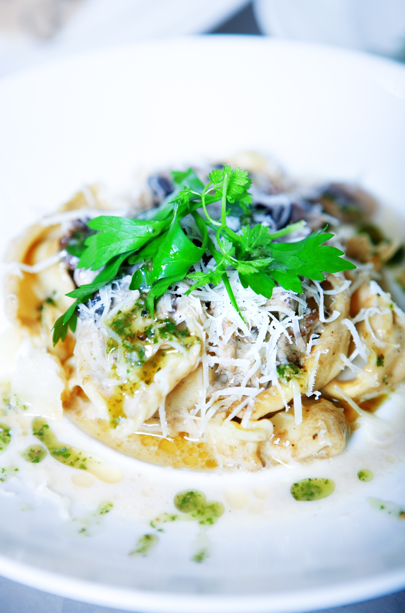

Home
Caramelised Tennessee Onion Tortellini

For this Caramelised Tennessee Onion Tortellini, sweet onions are baked until caramelised, combined with tortellini, and baked until bubby in a creamy sauce with plenty of cheese on top.
Ingredients
- 3 sweet onions, very thinly sliced
- 1 tablespoon olive oil
- 1 1/2 teaspoons Cajun seasoning
- 1/2 teaspoon paprika
- 1/4 teaspoon dried oregano
- 2 tablespoons butter
- 1 (20 ounce) package refrigerated tortellini
- 1 cup French onion dip
- 1/2 cup beef broth or water
- 1 1/2 cups shredded white Cheddar cheese
- 1/2 cup grated Parmesan cheese
- Chopped parsley for garnish
Cooking Steps
- Preheat the oven to 375 degrees F (190 degrees °C). Lightly grease a 3-quart baking dish.
- Add onions to the prepared baking dish and toss with olive oil. Sprinkle evenly with Cajun seasoning, paprika and oregano. Top with butter.
- Bake in the preheated oven, stirring every 20 to 30 minutes, until softened and caramelized, 1 to 1 1/2 hours.
- Meanwhile, bring a pot of salted water to a boil. Add tortellini and cook for 3 minutes; drain.
- Remove onions from oven; increase oven temperature to 400 degrees F (200 degrees C). Stir in French onion dip until well combined. Add tortellini and broth; stir until well combined. Top with Cheddar and Parmesan cheese.
- Return to the oven and bake until browned and bubbly, about 25 minutes. Sprinkle with parsley and serve.
Cook's Note
I used cheese filled tortellini but any variety will work here.